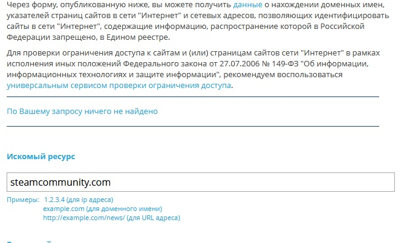

| Ник | Пост | Дата |
|---|---|---|
| meeeeeh | Поначалу думал что фейк, однако значится как заблокированный на https://eais.rkn.gov.ru В выгрузках пока что не появлялся, по факту вроде бы доступен (МСК, GPON РТК). Основания для блокировки в виде решения МВД в публичном доступе обнаружить не удалось. Если по существу, то сами сервера Steam под раздачу влипнуть не должны (кэши, логины, матчмейкинг), однако я подозреваю что отвалится часть функционала, связанная с профилями, аккаунтами, форумами, местным маркетплейсом и настройками аккаунта, ибо они достаточно плотно интегрированы друг с другом. Пока что есть только пара подтверждений от Фонтанки и РБК, с одним и тем же скриншотом: | 2024-02-27T13:08:02.963Z |
| Xunlei | Клиент Steam сильно связан с этим доменом. Поскольку GeoDNS у меня не работает, блоки получал давно и настроил Proxifier. Домены клиента следующие: | 2024-02-27T13:23:46.247Z |
| MaxBright(Максим) | У меня почему-то на https://eais.rkn.gov.ru нет результатов по запросу ссылки steamcommunity.com  | 2024-02-27T13:29:18.256Z |
| maxpain(Maxim Makarov) |
Похоже блокировку таки отменили | 2024-02-27T13:31:27.990Z |
| meeeeeh | Подтверждаю. Скорострельно убрали. | 2024-02-27T13:32:26.514Z |
| Angry_Agent(Angry Agent) | 2024-02-27T14:09:13.730Z | |
| MaxBright(Максим) |
Похоже, опять. Судя по скриншотам в комментариях DTF, кто-то нажаловался намеренно. Речь идёт опять о steamcommunity.com | 2024-08-24T17:13:25.497Z |
| MaxBright(Максим) | Думаю многие уже в курсе, но вот: Похоже они серьёзно намерены заблокировать в этот раз. Раньше всё удалялось из реестра в течении суток. | 2024-10-10T12:06:32.972Z |
| electrifying | Даже если комьюнити заблокируют доступ к магазину и библиотеке для скачивания игр останется, так что проблем нет. Вот если они полностью прям все блокнут, тогда да | 2024-10-10T12:19:33.489Z |
| exusiai | Стим разве не трет все что этим иродам не нравится? Просто сколько раз уже такое было что его вносили, а потом страницу которая им не нравится удаляли. | 2024-10-10T14:50:25.127Z |
| MaxBright(Максим) | Обычно так и есть, но в этот раз Steam что-то долго этим занимается. Раньше удалялось в течении суток. Будем надеется на лучшее, как-нибудь. | 2024-10-10T16:47:41.619Z |
| exusiai | В ТГ уже пошли новости что ремувнули они 250 ссылок на “противоправное”, так что пока выдыхаем. Надеюсь. | 2024-10-10T17:47:18.688Z |
| Keksimus(Tony) | Ну а что, заблокировали ютуб, ничего не произошло, заблокировали дискорд, тоже ничего. Точка невозврата уже давно пройдена, и даже если как в том анекдоте, выпустят закон об анальном изнасиловании граждан по субботам то ничего не случится. | 2024-10-10T17:48:11.554Z |
| IndeecFOX(IndeecFox) |
Случится! Пропадёт вазилин (и аналоги) в аптеках из-за возросшего спроса и будут очереди на процедуру) | 2024-10-10T21:52:58.009Z |
| exusiai | На ютуб были надежды да, что люди как то зашевелятся, но нет, самую крупную площадку забанили, так что дискорд и в обозримом будущем стим, это так, никто не заметит кроме тех кто этим хочет, хватит “отечественных аналогов”. Так что проги типо гудбая единственная надежда на хоть какую-то жизнь. | 2024-10-11T19:58:20.209Z |
| denium | Все крема не пропадут, столько косметики же. | 2024-10-11T21:02:32.133Z |
| IndeecFOX(IndeecFox) | В короновирусную изоляцию всю бумагу скупили. В начало войны - сахар) | 2024-10-11T21:18:51.785Z |
{kind=link}
{kind=link}